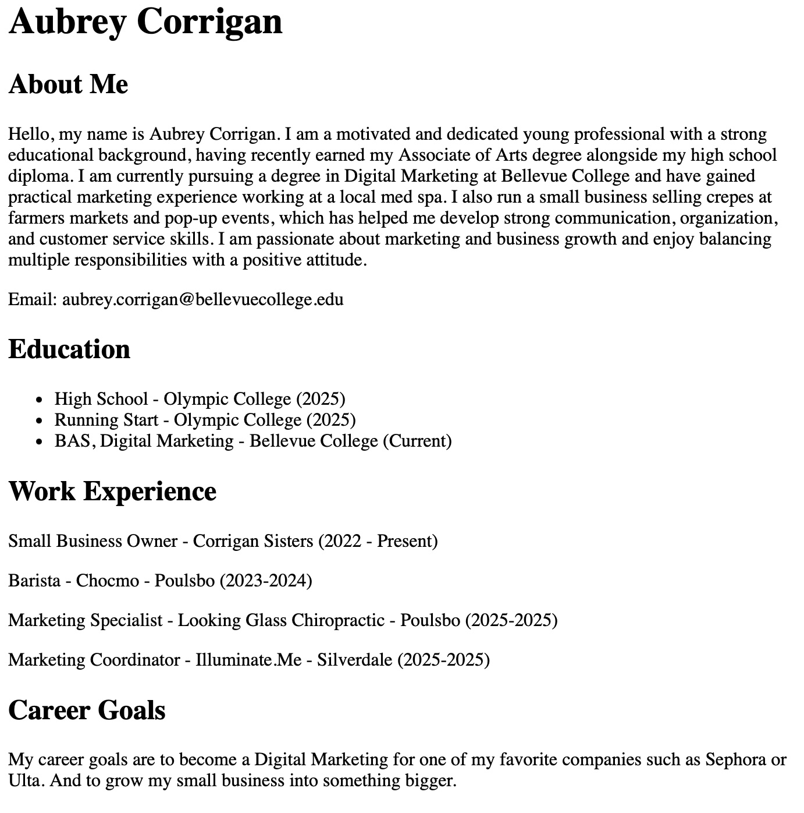

My Web Projects
Project 1: A Simple Single Line Code (Lab 1)
This project is a simple one-line website I created by hand-coding in HTML. The page just says "I have hand-coded this web page in HTML, showing that i can build a site completely from scratch without any extra toools or trmplates.
View Project
Image source: Personal photo by Aubrey Corrigan
Project 2: My Resume (About Me)

This project is a personal resume website that I hand-coded using HTML and CSS. It’s a simple site that shares information about me, my background, and my skills in a clear and easy-to-read way. I wanted to practice building a website completely from scratch, so everything from the structure to the design was written by me.
View Project
Image source: Image source: Personal photo by Aubrey Corrigan
Project 3: Help Save Polar Bears

This project is about how polar bears are in danger of going extinct. Climate change is melting the ice they need to hunt and live on, making it hard for them to find food. Many are going hungry, and pollution, oil drilling, and human activity are making things worse. If we don’t act soon, polar bears could lose their home for good.
View Project
Image source: Polar Bear by Pexels (free use)
Project 4: How to Make Chocolate Chip Cookies
This project is a simple recipe page I made to share how to bake classic chocolate chip cookies. It walks you through the ingredients, steps, and tips for making them extra tasty. I kept the design clean and easy to follow, just like a quick guide you'd use in the kitchen.
View Project
Image source: Personal photo by Aubrey Corrigan